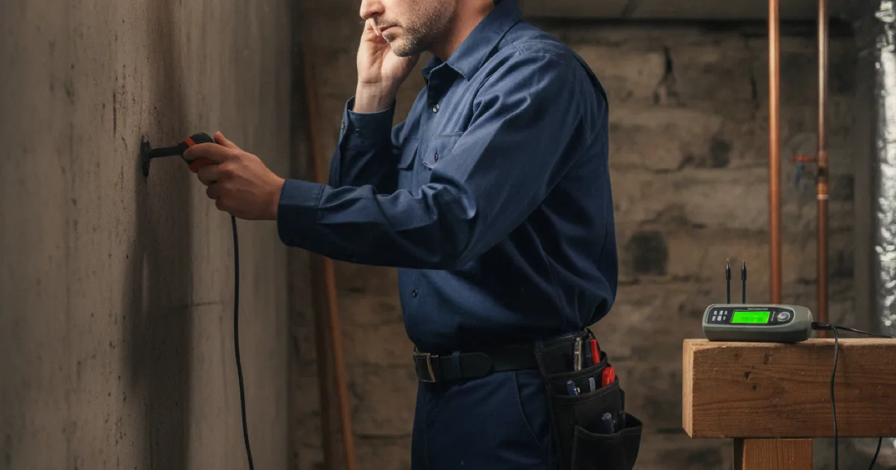

Hidden Leak Detection in Westchester County, NY
Some leaks hide behind walls and under floors for weeks. Dan's Drains finds them without tearing your home apart, so a small hidden leak does not turn into major water damage.
- Licensed & Insured
- Same-Day Service Available
- Upfront Pricing
- 15+ Years Local Experience

Need a plumber in Westchester County? We can usually help the same day.
Signs of a Hidden Leak
Hidden leaks are sneaky, but they leave clues:
- A water bill that jumped without a clear reason.
- A musty smell or a stain on a wall or ceiling.
- The sound of running water when everything is off.
- Warm spots on a floor, which can signal a hot-water line leak.
If your water meter keeps moving with every fixture off, water is going somewhere it should not.
How We Find a Hidden Leak
We track a leak to its source using listening equipment, meter checks, and know-how, so we can pinpoint it before opening a wall. That means we cut into only what we have to, not a whole ceiling on a hunch.
Once we find it, we fix it or, if the pipe is failing, recommend a targeted repair of the damaged section of pipe.
Talk to a local Westchester County plumber today.
Why Finding Leaks Early Matters
A slow leak can rot framing, ruin insulation, and grow mold long before you see a drop of water. Finding it early is far cheaper than repairing water damage later.
It also saves water and money. The EPA's Fix a Leak information notes how much household water leaks quietly waste — often more than people expect.
Hidden Leaks in Older Homes
Older homes around Westchester often have supply lines of mixed ages and materials, and joints that loosen over time. Those aging connections are a common source of the slow leaks we track down.
Because many local homes have finished basements, a hidden leak there can do costly damage before it is noticed, which is why we take even a small clue seriously.
When to Call a Pro
Call us when your water bill spikes, you smell must, or you hear water running with everything off. The sooner we find it, the less damage it does.
If the leak turns out to be under a slab, we handle that too with specialized under-slab leak repair.
Frequently Asked Questions
How do you find a leak without tearing up my house?
We use listening equipment, meter checks, and experience to pinpoint the source first, so we open only the small area we need to reach the leak.
My water bill jumped — is it definitely a leak?
Not always, but an unexplained spike is one of the most common signs. We can check your meter and track down whether water is escaping somewhere hidden.
How much water can a hidden leak waste?
More than most people think — a steady hidden leak can waste thousands of gallons over time, which is why finding it early saves both water and money.
Can a hidden leak cause mold?
Yes. Slow leaks behind walls keep materials damp, which is exactly what mold needs. Finding and fixing the leak early prevents it.
What if the leak is under my floor slab?
We handle slab leaks with specialized detection and repair, locating the leak under the concrete so we can fix it with minimal disruption.
Ready to book? Reach Dan’s Drains for fast, upfront plumbing help.